2026-08-12T07:03:30+00:00
301 Kenwood Ave
A two-story residential building with light-colored siding, partially obscured by mature trees in the front yard.
No open-data match yet
Open entry
Syracuse Property Atlas
A slow, sourced field notebook for city properties: parcel data, Street View, AI image observations, city open-data matches, tract context, and OpenStreetMap features.
Atlas map
Orange points are published entries. Gray points are parcels still waiting in the queue. Select a point to open the property popup.
Published properties
Each entry is generated by the hourly pipeline. AI notes are treated as field observations, not official code findings.
2026-08-12T07:03:30+00:00
A two-story residential building with light-colored siding, partially obscured by mature trees in the front yard.
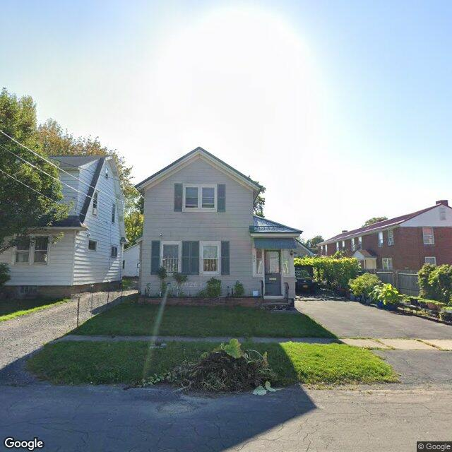
2026-08-12T06:02:55+00:00
A two-story residential structure with light grey siding and a small side-entry porch, featuring a maintained front lawn with a pile of yard waste near the curb.
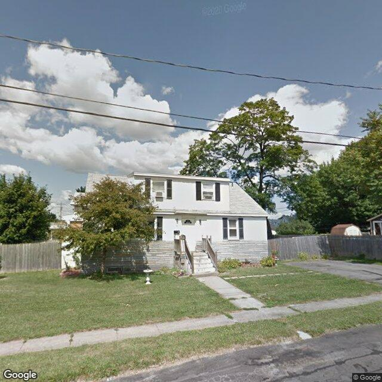
2026-08-12T05:02:56+00:00
A two-story residential structure with light-colored siding on the upper level and stone veneer on the lower level, featuring a front staircase and a grassy yard.
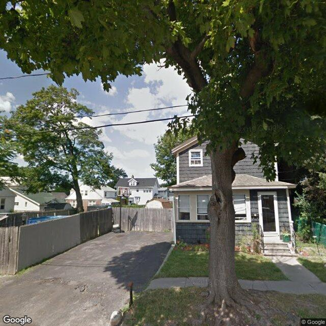
2026-08-12T04:02:52+00:00
A two-story residential building with dark siding and an enclosed front porch, partially obstructed by a large tree in the foreground.
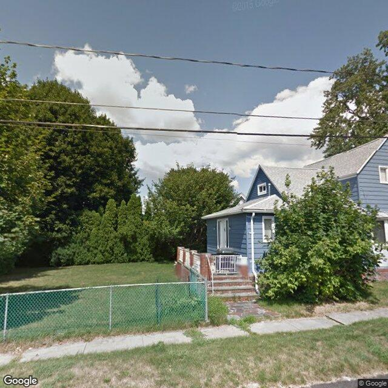
2026-08-12T03:02:56+00:00
A blue-sided residential structure with a gabled roof, side entrance steps, and a chain-link fence, partially obscured by mature trees and landscaping.
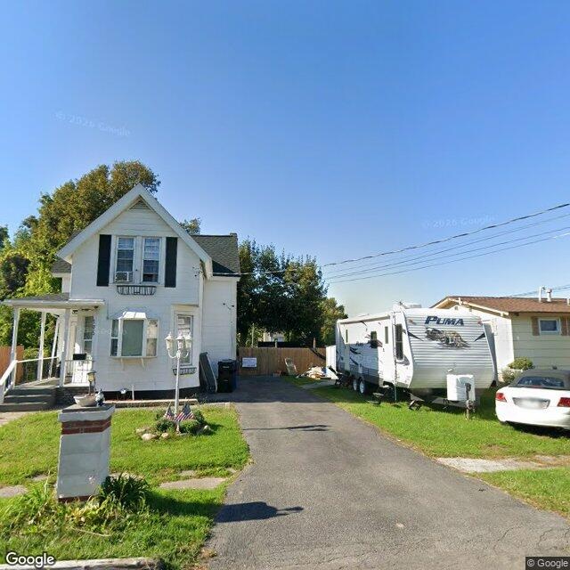
2026-08-12T02:03:27+00:00
The image displays a two-story residential property with white siding and a dark roof, appearing to be in generally fair to good exterior condition, with some minor items visible near a rear fence.
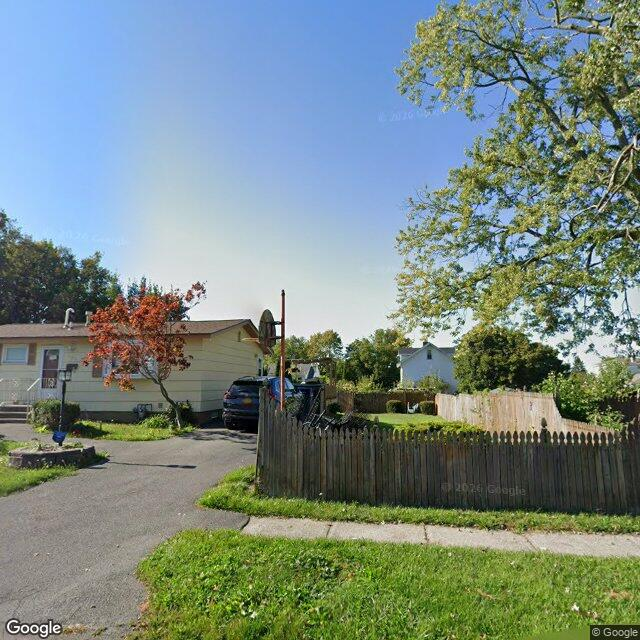
2026-08-11T12:20:37+00:00
A single-story residential property with light-colored siding, a paved driveway, and a wooden picket fence enclosing the side yard.
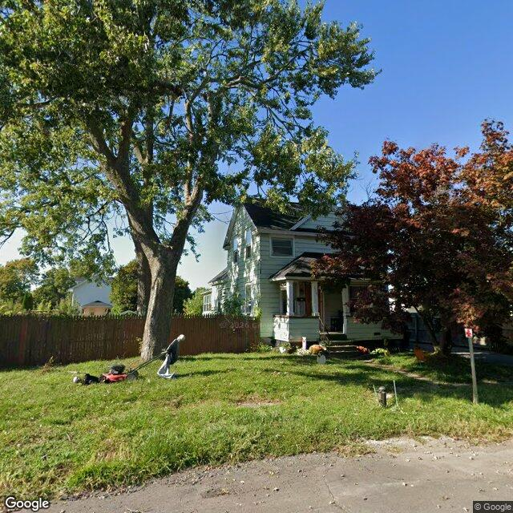
2026-08-11T11:15:33+00:00
A two-story residential structure with light-colored siding and a front porch, partially obscured by large mature trees.
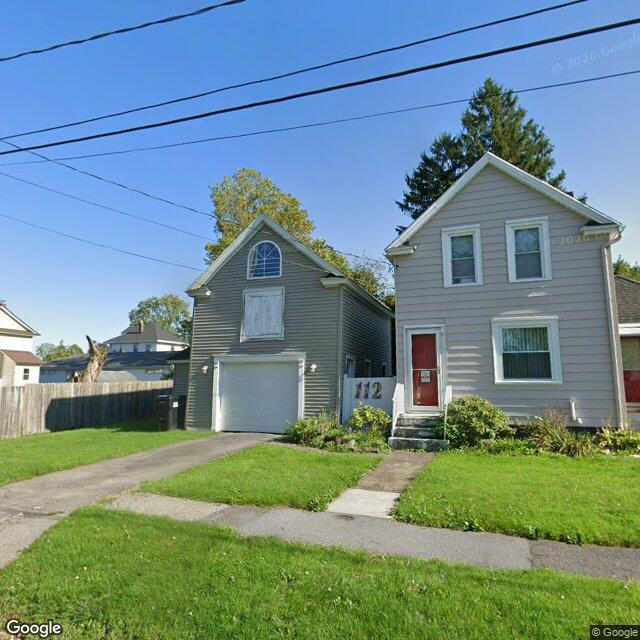
2026-08-11T07:32:57+00:00
A two-story residential property with an adjacent two-story garage structure featuring a boarded-up upper window.
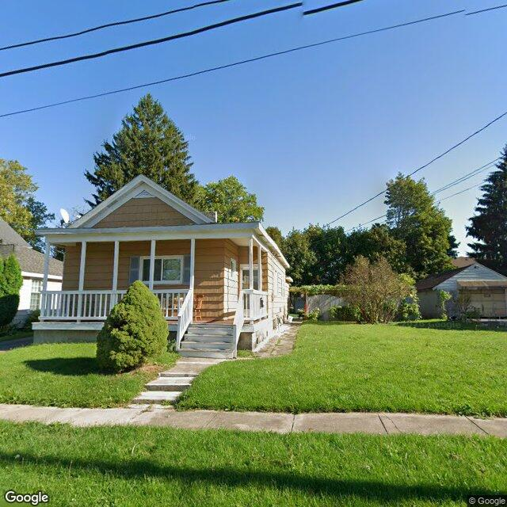
2026-08-11T05:42:00+00:00
A single-story residential structure with tan siding, a front porch, and a well-maintained lawn.
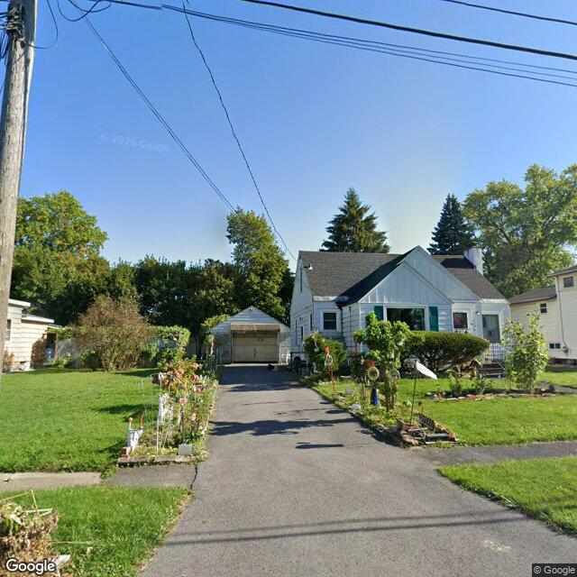
2026-08-10T23:24:35+00:00
A single-family residential home with a paved driveway leading to a detached garage, featuring a maintained front yard and garden elements.
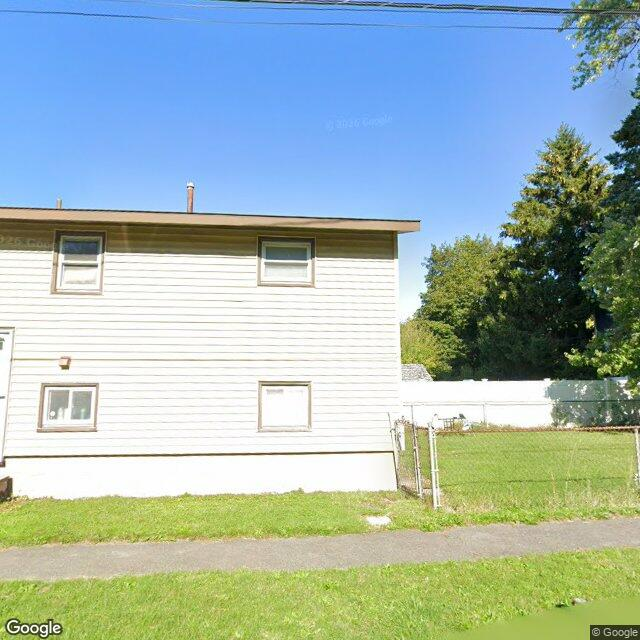
2026-08-10T13:02:56+00:00
A two-story residential building with light-colored siding and a chain-link fenced side yard, showing no obvious exterior defects.
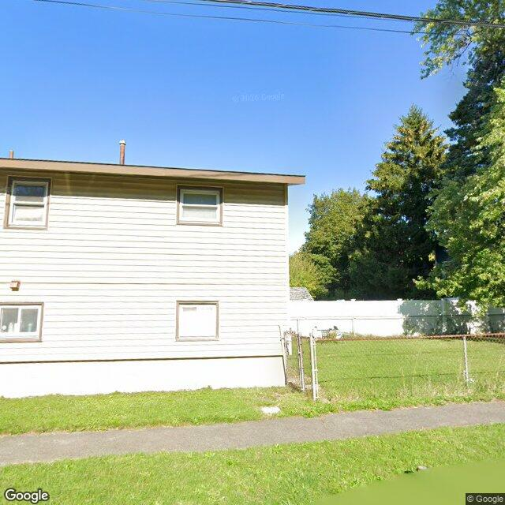
2026-08-10T12:02:52+00:00
The image shows the side exterior of a two-story residential building with light-colored horizontal siding and an adjacent fenced grassy yard.
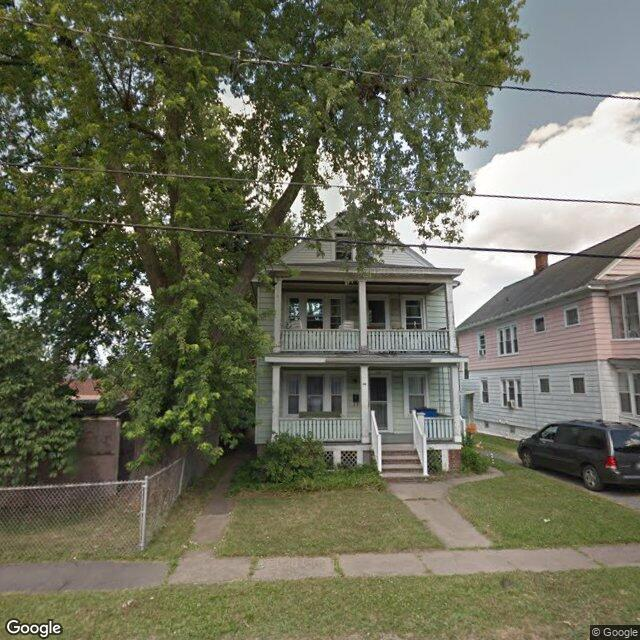
2026-08-10T11:49:12+00:00
A two-story residential structure with a double-decker front porch, partially obscured by a large mature tree in the front yard.
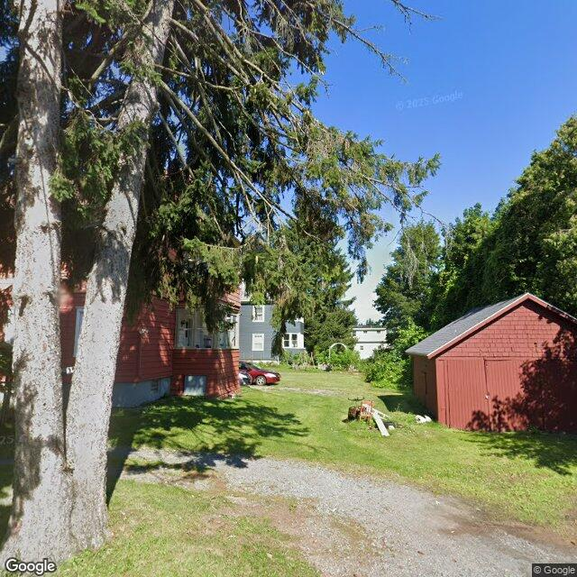
2026-08-08T02:02:55+00:00
A red-sided residential structure and a matching red outbuilding are visible, though the main building is heavily obscured by a large tree in the foreground.
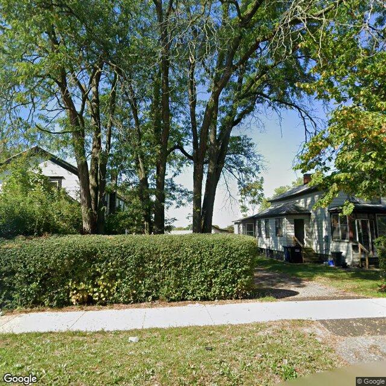
2026-08-08T01:36:34+00:00
A two-story residential building is partially visible behind mature trees and a tall, manicured hedge.
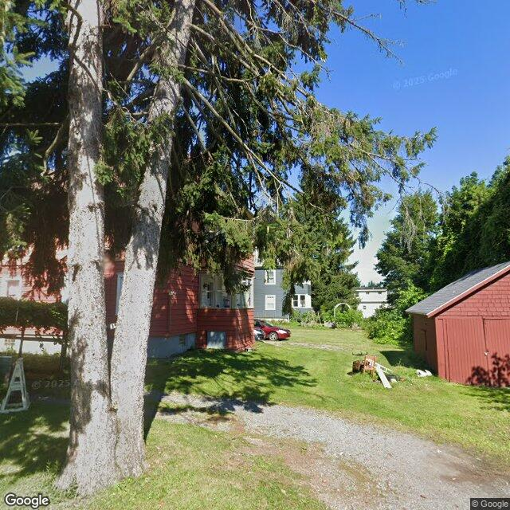
2026-08-07T19:08:40+00:00
A red residential structure and an adjacent red accessory building are partially visible behind large foreground trees on a grassy lot.
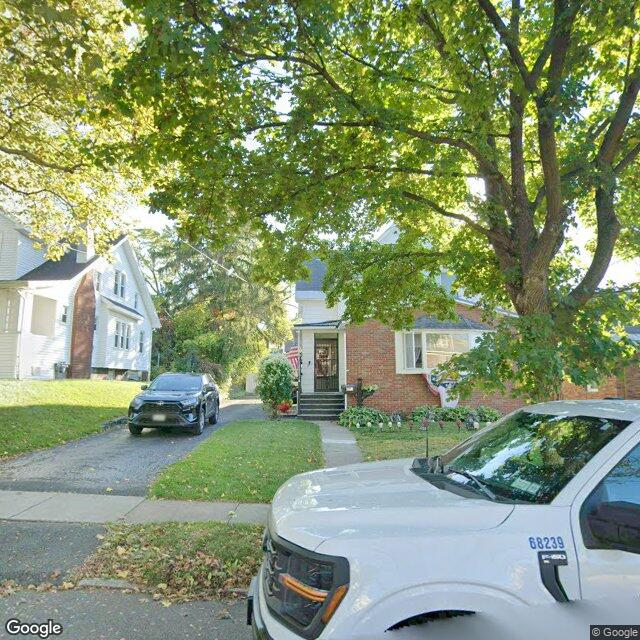
2026-08-07T16:37:39+00:00
A multi-story residential building with a brick and siding exterior, partially obscured by a large tree in the foreground.
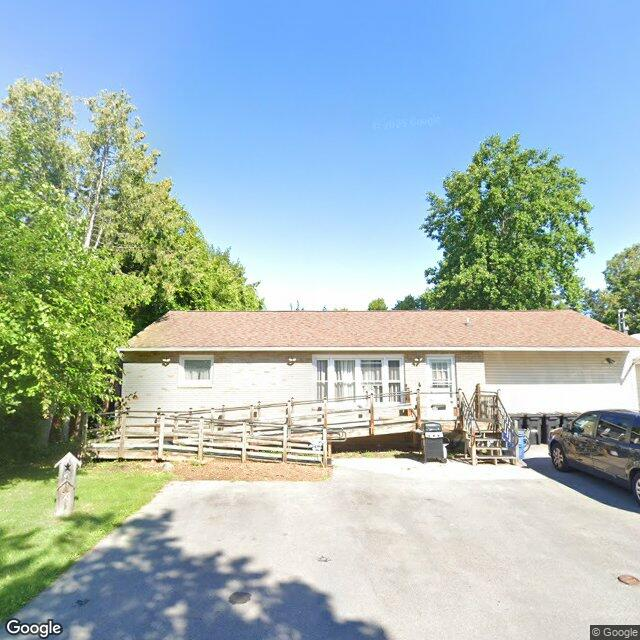
2026-08-07T13:59:24+00:00
A single-story residential-style building with a large wooden access ramp leading to the front entrance and a paved driveway in front.

2026-08-07T11:18:19+00:00
A single-story residential bungalow with a front gable, light-colored siding, and a brick accent wall, appearing in generally fair to good condition with a maintained front yard.

2026-08-06T07:03:07+00:00
The visible exterior of the property appears to be a single-family residence with a mix of brick and siding, a driveway, and a front yard partially obscured by a large bush.

2026-08-06T06:06:16+00:00
This image depicts a suburban residential street with single-family homes, some of which appear to be multi-family units due to the attached garages. The property in focus is a single-story house with visible exterior features, including a front yard with mature landscaping and a driveway leading to a garage. The building's facade shows typical construction materials and styles common in suburban neighborhoods.

2026-08-06T05:03:04+00:00
The property appears to be a two-story residence with white siding and a prominent front gable, partially obscured by a foreground tree and vehicle.

2026-08-06T04:03:10+00:00
The image displays a two-story residential structure with gray siding and a red roof, featuring a front porch, and an unkempt front yard area.
Method
The database starts with Syracuse parcels and enriches each selected property with vacant, rental registry, code violation, and unfit-property feeds. Census geocoding adds tract-level ACS context, OpenStreetMap adds nearby mapped features, and optional image analysis adds a visible-condition read when a free or paid image source is configured.